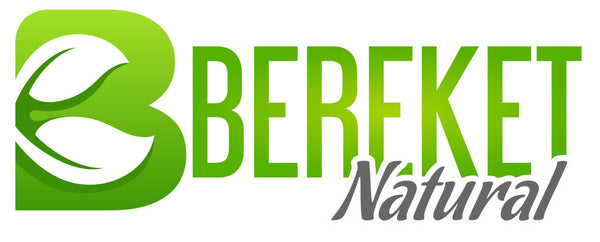
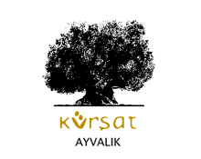

Bölgesel / Yerel
Belirli bir yöreyi temsil eden, coğrafi karakteri öne çıkaran bölgesel ve yerel üretici markalar.
Bölgesel / Yerel odaklı zeytinyağı markaları, benzer bölgeler ve ilgili zeytin çeşitleri. 25 marka listesi.
Bu Sayfadaki Markalar
 Bölgesel / Yerel
Bölgesel / Yerel
Ayla Zeytinyağı
Ayvalık bölgesinin geleneksel zeytinyağı markası. Ayvalık çeşidi zeytinlerden soğuk sıkım natürel sızma zeytinyağı üretir....
Ayvaco
Ayvacık çevresinde üretim yapan yerel marka. Soğuk sıkım natürel sızma zeytinyağı çeşitleriyle bilinir....
 Bölgesel / Yerel
Bölgesel / Yerel
Ayvalık Yıldızı
Ayvalık'ın meşhur zeytinlerinden üretilen bölgesel marka. Ayvalık zeytinyağının kendine has meyvemsi aromasını yansıtır....

Bölgesel / YerelBereket
Güney bölgelerden zeytinyağı üreten marka. Hatay ve Mersin yöresi zeytinlerinden natürel sızma zeytinyağı üretir....
 Bölgesel / Yerel
Bölgesel / Yerel
Dalgıçoğlu
Edremit Körfezi çevresinde üretim yapan marka. Bölgesel zeytinyağı ürünleri sunar....
 Bölgesel / Yerel
Bölgesel / Yerel
Değirmenci
Ege bölgesinden taş baskı ve soğuk sıkım zeytinyağları sunan marka. Geleneksel üretim yöntemleri ile kaliteli natürel sızma zeytinyağı üretir....
 Bölgesel / Yerel
Bölgesel / Yerel
Edremit Körfezi
Edremit Körfezi'nin eşsiz ikliminde yetişen zeytinlerden üretilen natürel sızma zeytinyağı. ZETAŞ olarak da bilinir....
 Bölgesel / Yerel
Bölgesel / Yerel
Egemden
Ege bölgesinin doğal lezzetlerini sunan marka. Natürel sızma zeytinyağı ve zeytin ürünleri portföyü bulunur....
 Bölgesel / Yerel
Bölgesel / Yerel
Gemlika
Gemlik zeytininden üretilen natürel sızma zeytinyağına odaklanan bölgesel marka....
 Bölgesel / Yerel
Bölgesel / Yerel
İzmir Pınarı
İzmir bölgesinden kaliteli zeytinyağı üreten yerel marka. Ege zeytinlerinden soğuk sıkım natürel sızma zeytinyağı sunar....
Koral Zeytin
Akhisar merkezli üretici. Zeytin ve zeytinyağı ürünlerinde yerel üretim odaklıdır....

Bölgesel / YerelKürşat
Güneydoğu bölgesinden, özellikle Kilis ve Hatay zeytinlerinden üretim yapan marka. Halhalı ve Nizip zeytinlerinden kaliteli yağ üretir....
 Bölgesel / Yerel
Bölgesel / Yerel
Milas Zeytinyağları
Muğla'nın Milas ilçesinden üretim yapan yerel marka. Milas bölgesinin kendine has zeytin çeşitlerinden kaliteli yağ üretir....
 Bölgesel / Yerel
Bölgesel / Yerel
MR Zeytin
Akhisar merkezli zeytin ve zeytinyağı üreticisi. Natürel sızma ürünleriyle öne çıkar....
Nizolive
Güneydoğu kökenli üretici marka. Nizip yağlık başta olmak üzere bölgesel zeytinlerden zeytinyağı üretimi yapar....
 Bölgesel / Yerel
Bölgesel / Yerel
Ödemiş Birlik
Ödemiş bölgesi zeytin üreticileri kooperatifi. Memecik çeşidi zeytinlerden kaliteli natürel sızma zeytinyağı üretir....
 Bölgesel / Yerel
Bölgesel / Yerel
Papez
Güney Ege bölgesinden kaliteli zeytinyağı üreten marka. Natürel sızma zeytinyağları ile tanınır....
 Bölgesel / Yerel
Bölgesel / Yerel
Polat Zeytinyağı
Ege bölgesinde uzun yıllardır zeytinyağı üreten aile şirketi. Geleneksel yöntemlerle kaliteli natürel sızma zeytinyağı üretir....
Sabuncugil
Ayvalık kökenli geleneksel üretici marka. Natürel sızma ve bölgesel ürünleriyle bilinir....
 Bölgesel / Yerel
Bölgesel / Yerel
Selatin
Geleneksel yöntemlerle üretim yapan zeytinyağı markası. Doğal ve katkısız ürünleri ile bilinir....
 Bölgesel / Yerel
Bölgesel / Yerel
Tarihi Kırkpınar
Trakya bölgesinden zeytinyağı üreten marka. Edirne ve Trakya yöresi zeytinlerinden üretim yapar....
 Bölgesel / Yerel
Bölgesel / Yerel
Trilye
Bursa'nın Mudanya ilçesindeki tarihi Trilye (Tirilye) bölgesinden adını alan zeytinyağı markası. Bölgenin zengin zeytin mirasını yansıtır....
 Bölgesel / Yerel
Bölgesel / Yerel
Zetay
Edremit Körfezi odaklı üretici. Bölgesel zeytinlerden natürel sızma ve riviera ürünleri sunar....
 Bölgesel / Yerel
Bölgesel / Yerel
Zeytin Dalı
Ege bölgesinden natürel sızma zeytinyağı üreten marka. Geleneksel ve modern üretim yöntemlerini birleştirerek kaliteli ürünler sunar....
 Bölgesel / Yerel
Bölgesel / Yerel
Zeytursan
Marmara bölgesinde zeytinyağı üretimi ve işleme yapan firma. Hem sofralık zeytin hem de zeytinyağı ürünleri sunar....